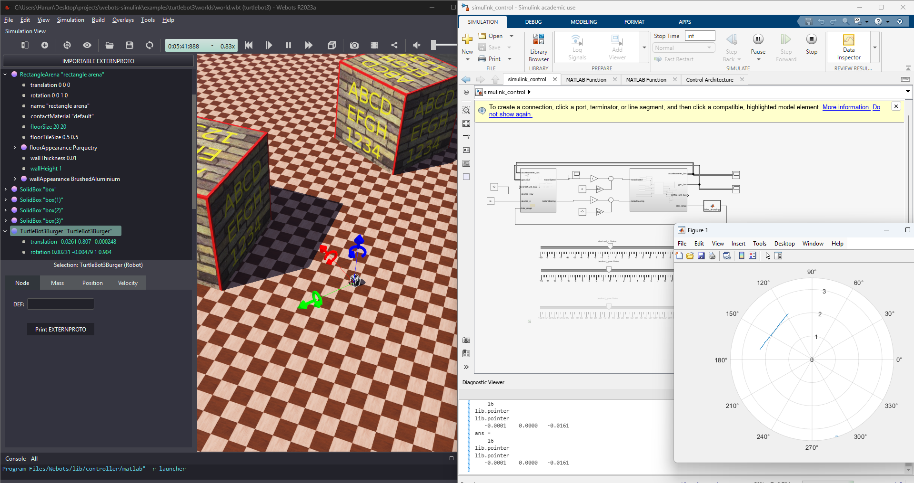
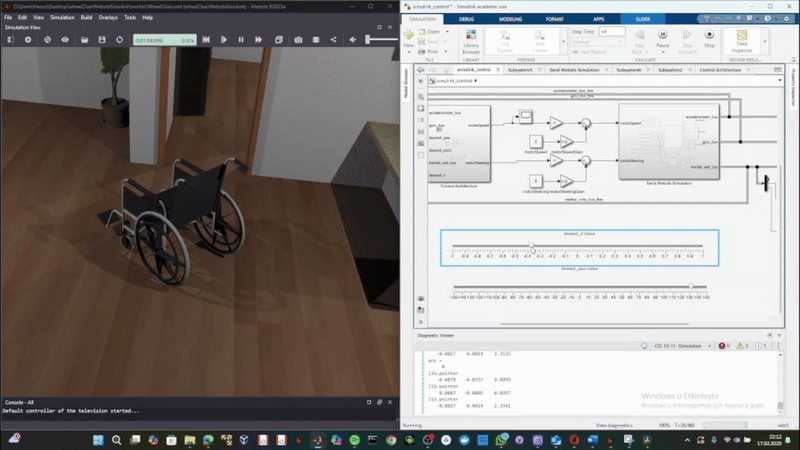

TurtleBot3¶


The TurtleBot3 is a popular educational and research robot platform developed by ROBOTIS in collaboration with Open Robotics. It's widely used for learning robotics, SLAM, navigation, and autonomous systems development.
System Overview¶
TurtleBot3 is a compact, affordable, and highly customizable mobile robot designed for education, research, and hobby applications. It features a modular design that supports various sensor configurations and computing platforms.
Key Features¶
- Compact Design: Small footprint ideal for indoor navigation
- Modular Architecture: Customizable sensor and hardware configuration
- ROS Native: Full ROS/ROS2 integration and support
- Educational Focus: Extensive documentation and learning resources
- Open Source: Hardware and software designs freely available
- Multiple Variants: Burger, Waffle, and Waffle Pi configurations
Specifications¶
- Dimensions: Approximately 178mm × 178mm × 192mm (Burger model)
- Weight: ~1kg (varies by model and configuration)
- Max Speed: ~0.22 m/s linear, ~2.84 rad/s angular
- Battery Life: ~2.5 hours (varies by usage)
- Wheel Configuration: 2-wheel differential drive
- Computing: Raspberry Pi or similar SBC
Components¶
Drive System¶
- Motors: Two servo motors (Dynamixel XL430-W250-T)
- Wheels: Two main drive wheels with omni-directional caster wheel
- Encoders: Built-in position feedback in Dynamixel servos
- Drive Type: Differential drive kinematics
Standard Sensors¶
- LiDAR: 360-degree laser range finder (LDS-01 or LDS-02)
- IMU: 9-axis inertial measurement unit
- Odometry: Wheel encoder-based position estimation
- Optional: Camera (RealSense, Raspberry Pi camera)
Computing Platform¶
- Single Board Computer: Raspberry Pi 3B+ or 4
- Microcontroller: OpenCR board for low-level control
- Communication: Wi-Fi, Ethernet, Serial interfaces
Simulink Integration¶
Available Functions¶
The TurtleBot3 example includes comprehensive MATLAB functions for Simulink integration:
wb_robot_step.m- Main simulation step functionwb_motor_set_velocity.m- Differential drive velocity controlwb_motor_set_position.m- Motor position controlwb_motor_get_position_sensor.m- Wheel encoder readingswb_gyro_get_values.m- IMU gyroscope datawb_accelerometer_get_values.m- IMU accelerometer datawb_lidar_get_range_image.m- LiDAR scan data processingwb_lidar_get_horizontal_resolution.m- LiDAR configuration
State-Space Modeling¶
The included Simulink model (state_space_modeling.slx) provides:
- Differential Drive Kinematics: Forward and inverse kinematic models
- Sensor Fusion: IMU and odometry integration
- Navigation Control: Velocity and trajectory control
- SLAM Integration: Real-time mapping capabilities
- Obstacle Avoidance: LiDAR-based collision avoidance
Control System Design¶
Differential Drive Kinematics¶
The TurtleBot3 uses differential drive kinematics where linear and angular velocities are controlled through left and right wheel speeds:
% Forward kinematics
v = (v_left + v_right) / 2; % Linear velocity
w = (v_right - v_left) / L; % Angular velocity
% Inverse kinematics
v_left = v - (w * L) / 2; % Left wheel velocity
v_right = v + (w * L) / 2; % Right wheel velocity
Where:
- v: Linear velocity (m/s)
- w: Angular velocity (rad/s)
- L: Wheelbase distance (m)
Control Architecture¶
- Low-level Control: Motor velocity control with PID feedback
- Motion Control: Velocity and trajectory following
- Navigation: Path planning and execution
- SLAM: Simultaneous localization and mapping
- Behavior: Task-level behavior coordination
System Block Diagram¶
flowchart TB
subgraph Reference["Reference Inputs"]
R1[/"Goal Position<br/>(x_g, y_g)"/]
R2[/"Velocity Command<br/>(v, ω)"/]
end
subgraph Navigation["Navigation Stack"]
SLAM[SLAM<br/>Module]
GP[Global<br/>Planner]
LP[Local<br/>Planner]
AMCL[AMCL<br/>Localization]
end
subgraph Perception["Perception"]
LIDAR[LiDAR<br/>LDS-01]
IMU[IMU<br/>9-Axis]
ODOM[Wheel<br/>Odometry]
end
subgraph Control["Motion Control"]
subgraph VelCtrl["Velocity Controller"]
VC[Twist to<br/>Wheel Velocity]
end
subgraph MotorCtrl["Motor Controller"]
PID_L[PID<br/>Left]
PID_R[PID<br/>Right]
end
end
subgraph Actuators["Drive System"]
ML[Left<br/>Dynamixel]
MR[Right<br/>Dynamixel]
end
subgraph Plant["TurtleBot3"]
ROBOT[Robot<br/>Dynamics]
end
R1 --> GP
GP --> LP
LP --> VC
R2 --> VC
LIDAR --> SLAM
LIDAR --> LP
ODOM --> SLAM
ODOM --> AMCL
IMU --> AMCL
SLAM --> GP
AMCL --> LP
VC --> PID_L
VC --> PID_R
PID_L --> ML
PID_R --> MR
ML --> ROBOT
MR --> ROBOT
ROBOT --> LIDAR
ROBOT --> IMU
ROBOT --> ODOM
style Reference fill:#e1f5fe
style Navigation fill:#fff3e0
style Perception fill:#f3e5f5
style Control fill:#e8f5e9
style Actuators fill:#ffebee
style Plant fill:#fce4ecState-Space Model¶
flowchart LR
subgraph Inputs["Control Inputs u"]
U1["v (Linear Velocity)"]
U2["ω (Angular Velocity)"]
end
subgraph StateSpace["State-Space Model<br/>ẋ = f(x,u)"]
subgraph States["State Vector x"]
S1["x - X Position [m]"]
S2["y - Y Position [m]"]
S3["θ - Heading [rad]"]
end
end
subgraph Outputs["Outputs y"]
Y1["Position (x, y)"]
Y2["Orientation (θ)"]
end
Inputs --> StateSpace
StateSpace --> Outputs
style Inputs fill:#ffcdd2
style StateSpace fill:#c8e6c9
style Outputs fill:#bbdefbDifferential Drive Model¶
flowchart TB
subgraph DiffDrive["Differential Drive Kinematics"]
subgraph Forward["Forward Kinematics"]
F1["ẋ = v·cos(θ)"]
F2["ẏ = v·sin(θ)"]
F3["θ̇ = ω"]
end
subgraph WheelVel["Wheel-Body Velocity"]
W1["v = r(ω_R + ω_L)/2"]
W2["ω = r(ω_R - ω_L)/L"]
end
subgraph Inverse["Inverse Kinematics"]
I1["ω_L = (v - ωL/2)/r"]
I2["ω_R = (v + ωL/2)/r"]
end
end
subgraph Params["TurtleBot3 Parameters"]
P1["r = 0.033 m (wheel radius)"]
P2["L = 0.160 m (wheelbase)"]
P3["v_max = 0.22 m/s"]
P4["ω_max = 2.84 rad/s"]
end
Forward --> WheelVel
WheelVel --> Inverse
style DiffDrive fill:#e8f5e9
style Params fill:#fff8e1State-Space Matrices¶
%% TurtleBot3 State-Space Model
% Nonlinear kinematic model (differential drive)
% State vector: x = [x, y, theta]'
% Input vector: u = [v, omega]'
% TurtleBot3 Burger Parameters
r = 0.033; % Wheel radius [m]
L = 0.160; % Wheelbase (wheel separation) [m]
v_max = 0.22; % Maximum linear velocity [m/s]
omega_max = 2.84; % Maximum angular velocity [rad/s]
% Nonlinear dynamics (for simulation)
% dx/dt = v * cos(theta)
% dy/dt = v * sin(theta)
% dtheta/dt = omega
% Linearized model around operating point (theta_0)
% For small deviations from straight-line motion
theta_0 = 0; % Operating point heading
A = [0, 0, 0;
0, 0, 0;
0, 0, 0];
B = [cos(theta_0), 0;
sin(theta_0), 0;
0, 1];
C = eye(3);
D = zeros(3, 2);
% Extended state-space with velocity dynamics
% State: [x, y, theta, v, omega]'
% Input: [v_cmd, omega_cmd]'
tau_v = 0.1; % Velocity time constant [s]
tau_omega = 0.1; % Angular velocity time constant [s]
A_ext = [0, 0, 0, 1, 0;
0, 0, 0, 0, 0;
0, 0, 0, 0, 1;
0, 0, 0, -1/tau_v, 0;
0, 0, 0, 0, -1/tau_omega];
B_ext = [0, 0;
0, 0;
0, 0;
1/tau_v, 0;
0, 1/tau_omega];
C_ext = [1, 0, 0, 0, 0;
0, 1, 0, 0, 0;
0, 0, 1, 0, 0];
D_ext = zeros(3, 2);
%% Wheel velocity to body velocity conversion
function [v, omega] = wheelToBody(omega_L, omega_R, r, L)
v = r * (omega_R + omega_L) / 2;
omega = r * (omega_R - omega_L) / L;
end
%% Body velocity to wheel velocity conversion
function [omega_L, omega_R] = bodyToWheel(v, omega, r, L)
omega_L = (v - omega * L / 2) / r;
omega_R = (v + omega * L / 2) / r;
end
%% Velocity saturation
function [v_sat, omega_sat] = saturateVelocity(v, omega, v_max, omega_max)
v_sat = max(min(v, v_max), -v_max);
omega_sat = max(min(omega, omega_max), -omega_max);
end
Velocity Control Loop¶
flowchart TB
subgraph TwistCmd["Twist Command (cmd_vel)"]
V_D[/"v_cmd"/]
W_D[/"ω_cmd"/]
end
subgraph Conversion["Inverse Kinematics"]
CONV["ω_L = (v - ωL/2)/r<br/>ω_R = (v + ωL/2)/r"]
end
subgraph MotorControl["Motor PID Control"]
subgraph Left["Left Wheel"]
WL_D[/"ω_L_cmd"/]
WL[/"ω_L_actual"/]
ERR_L((+<br/>-))
PID_L[PID<br/>Kp=1.0]
PWM_L["PWM_L"]
end
subgraph Right["Right Wheel"]
WR_D[/"ω_R_cmd"/]
WR[/"ω_R_actual"/]
ERR_R((+<br/>-))
PID_R[PID<br/>Kp=1.0]
PWM_R["PWM_R"]
end
end
V_D --> CONV
W_D --> CONV
CONV --> WL_D
CONV --> WR_D
WL_D --> ERR_L
WL --> ERR_L
ERR_L --> PID_L
PID_L --> PWM_L
WR_D --> ERR_R
WR --> ERR_R
ERR_R --> PID_R
PID_R --> PWM_R
style TwistCmd fill:#e1f5fe
style Conversion fill:#fff8e1
style MotorControl fill:#e8f5e9SLAM Architecture¶
flowchart TB
subgraph SLAMSystem["SLAM System"]
subgraph Frontend["Front-End"]
SCAN[LiDAR<br/>Scan]
MATCH[Scan<br/>Matching]
ODOM[Odometry<br/>Integration]
end
subgraph Backend["Back-End"]
GRAPH[Pose<br/>Graph]
OPT[Graph<br/>Optimization]
LOOP[Loop<br/>Closure]
end
subgraph Output["Outputs"]
MAP[Occupancy<br/>Grid Map]
POSE[Robot<br/>Pose]
end
end
SCAN --> MATCH
ODOM --> MATCH
MATCH --> GRAPH
GRAPH --> OPT
LOOP --> OPT
MATCH --> LOOP
OPT --> MAP
OPT --> POSE
style Frontend fill:#e3f2fd
style Backend fill:#fff3e0
style Output fill:#e8f5e9Navigation and SLAM¶
Navigation Stack Components¶
- Localization: AMCL (Adaptive Monte Carlo Localization)
- Global Planning: A, RRT, or Dijkstra path planning algorithms
- Local Planning: DWA (Dynamic Window Approach) for obstacle avoidance
- Costmaps: Static and dynamic obstacle representation
- Recovery Behaviors: Stuck and obstacle recovery strategies
SLAM Capabilities¶
- Gmapping: Grid-based SLAM using laser scan data
- Cartographer: Google's real-time SLAM solution
- Hector SLAM: Fast 2D SLAM without odometry requirement
- RTAB-Map: 3D RGB-D SLAM (with camera)
Usage Examples¶
Basic Movement Control¶
# Move forward
linear_velocity = 0.2 # m/s
angular_velocity = 0.0 # rad/s
# Turn in place
linear_velocity = 0.0 # m/s
angular_velocity = 0.5 # rad/s
# Arc movement
linear_velocity = 0.15 # m/s
angular_velocity = 0.3 # rad/s
Simulink Control Setup¶
- Load World: Open
turtlebot3/worlds/world.wbt - Configure Controller: Set to
simulink_control_app - Open Model: Load
state_space_modeling.slxin MATLAB - Set Parameters: Configure PID gains and sensor settings
- Run Simulation: Execute with real-time data exchange
Common Applications¶
- Autonomous Navigation: Goal-based navigation with obstacle avoidance
- SLAM Mapping: Real-time environment mapping
- Follow-Me Robot: Person following using camera or LiDAR
- Multi-Robot Systems: Coordination of multiple TurtleBot3 units
- Educational Demos: Teaching robotics concepts
Educational Applications¶
Learning Objectives¶
The TurtleBot3 platform is excellent for teaching:
- Mobile Robot Kinematics: Differential drive mathematics
- Sensor Integration: LiDAR, IMU, and encoder fusion
- Control Systems: PID control and feedback systems
- Path Planning: A*, RRT, and potential field methods
- SLAM Algorithms: Mapping and localization techniques
- ROS Concepts: Node communication and system architecture
Laboratory Exercises¶
- Basic Movement: Implement teleoperation and waypoint navigation
- Sensor Processing: LiDAR data filtering and obstacle detection
- Mapping: Create maps using different SLAM algorithms
- Navigation: Implement autonomous navigation stack
- Multi-Robot: Coordinate multiple robots for formation control
Performance Characteristics¶
Motion Capabilities¶
- Max Linear Speed: 0.22 m/s
- Max Angular Speed: 2.84 rad/s
- Minimum Turning Radius: Zero (turn in place)
- Typical Operating Speed: 0.1-0.15 m/s for navigation
Sensor Performance¶
- LiDAR Range: 0.12m - 3.5m
- LiDAR Accuracy: ±3cm
- Update Rate: 10-15 Hz (typical navigation frequency)
- IMU Drift: <1°/hour (typical gyro drift)
References¶
- TurtleBot3 Official Documentation
- TurtleBot3 ROS Packages
- Webots TurtleBot3 Model
- ROS Navigation Stack
Educational Purpose: The TurtleBot3 simulation provides a comprehensive platform for learning mobile robotics, SLAM, navigation, and control systems. Its integration with Simulink enables rapid prototyping of control algorithms and provides a bridge between theoretical concepts and practical implementation. The platform is widely used in robotics courses worldwide and serves as an excellent introduction to autonomous mobile robotics.